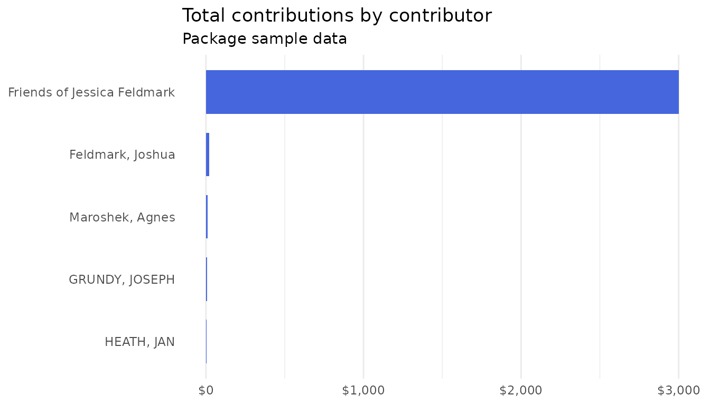

Analyzing Maryland Campaign Finance Data
Source:vignettes/analyzing-maryland-campaign-finance.Rmd
analyzing-maryland-campaign-finance.Rmdfreestatemoney downloads and parses campaign finance
data from the Maryland State Board of Elections Campaign Reporting
Information System (CRIS). This vignette walks through the full
workflow: getting data, loading it, and answering common reporting
questions.
library(freestatemoney)
library(dplyr)
#>
#> Attaching package: 'dplyr'
#> The following objects are masked from 'package:stats':
#>
#> filter, lag
#> The following objects are masked from 'package:base':
#>
#> intersect, setdiff, setequal, unionGetting data
md_download() fetches bulk CSVs directly from the SBE’s
API — the same data the download page at https://campaignfinance.maryland.gov/public/cf/downloads
serves. Full-cycle transaction files can run to hundreds of megabytes,
so pass a year to limit downloads to a single filing
year:
committees <- md_committees(md_download("committees"))
contributions <- md_contributions(md_download("contributions", year = 2025))
expenditures <- md_expenditures(md_download("expenditures", year = 2025))
# Or all three at once:
md <- md_load_all(year = 2025)So this vignette can run anywhere, it uses small samples of real CRIS data that ship with the package:
sample_file <- function(name) {
system.file("extdata", name, package = "freestatemoney")
}
committees <- md_committees(sample_file("committees_sample.csv"))
contributions <- md_contributions(sample_file("contributions_sample.csv"))
expenditures <- md_expenditures(sample_file("expenditures_sample.csv"))What the loaders handle for you
Raw CRIS files have several quirks that the loaders take care of:
- A metadata line like
Committee Download as of 06/14/2026 01:00 AMprecedes the header. It is skipped, and its timestamp is kept:
attr(committees, "download_date")
#> [1] "2026-06-14 01:00:00 UTC"- Amounts arrive dollar-formatted (
$3,000.00) and are parsed as numeric; dates (MM/DD/YYYY) becomeDateobjects:
contributions %>%
select(transaction_date, transaction_amount) %>%
head(3)
#> # A tibble: 3 × 2
#> transaction_date transaction_amount
#> <date> <dbl>
#> 1 2024-11-20 3.6
#> 2 2024-06-25 10
#> 3 2025-05-16 3000- Zip codes arrive wrapped for Excel (
="21228") and are unwrapped; files are read with their actual encoding (typically Windows-1252, not UTF-8).
The loaders also refuse to load the wrong dataset — passing a
contributions file to md_committees() produces an error
naming the function you wanted.
Exploring committees
committees %>%
count(committee_type, sort = TRUE)
#> # A tibble: 1 × 2
#> committee_type n
#> <chr> <int>
#> 1 Candidate Committee 8
committees %>%
filter(committee_type == "Candidate Committee") %>%
select(committee_name, candidate_last_name, office_sought, party_affiliation) %>%
head(5)
#> # A tibble: 5 × 4
#> committee_name candidate_last_name office_sought party_affiliation
#> <chr> <chr> <chr> <chr>
#> 1 Guthrie, Dion F. Citizens… GUTHRIE County Counc… Democrat
#> 2 Rosapepe, Jim Friends Of ROSAPEPE State Senator Democrat
#> 3 Washington, Mary M. Citiz… WASHINGTON Board of Edu… Other
#> 4 Kearney, Reginald Friends… KEARNEY Judge of the… Democrat
#> 5 Lee, Cereta A. Friends Of LEE Register of … DemocratWho gives, and how much?
md_top_contributors() aggregates by contributor —
organizations by company name, individuals as “Last, First” — and ranks
by total:
top <- md_top_contributors(contributions, n = 10)
top
#> # A tibble: 5 × 4
#> contributor contributor_type total n_contributions
#> <chr> <chr> <dbl> <int>
#> 1 Friends of Jessica Feldmark Business/Group/Organization 3000 1
#> 2 Feldmark, Joshua Individual 20.5 2
#> 3 Maroshek, Agnes Individual 10 1
#> 4 GRUNDY, JOSEPH Individual 8.1 3
#> 5 HEATH, JAN Individual 3.6 1
library(ggplot2)
top %>%
mutate(contributor = reorder(contributor, total)) %>%
ggplot(aes(x = total, y = contributor)) +
geom_col(fill = "#4666DE", width = 0.7) +
scale_x_continuous(labels = scales::dollar) +
labs(
title = "Total contributions by contributor",
subtitle = "Package sample data",
x = NULL, y = NULL
) +
theme_minimal() +
theme(panel.grid.major.y = element_blank())
With a full year of data, the same call surfaces the largest donors in the state.
Following the spending
expenditures %>%
group_by(category) %>%
summarize(
total = sum(transaction_amount, na.rm = TRUE),
n = n()
) %>%
arrange(desc(total))
#> # A tibble: 4 × 3
#> category total n
#> <chr> <dbl> <int>
#> 1 Salaries and Other Compensation 17680 4
#> 2 Field Expenses 8294. 3
#> 3 Printing and Campaign Materials 1320 1
#> 4 Other Expenses 42.7 2Independent expenditures and electioneering communications — spending
about candidates rather than by them — get their own
summary. CRIS labels these with combined transaction types, so
md_independent_expenditures() matches by pattern:
md_independent_expenditures(expenditures)
#> # A tibble: 1 × 5
#> committee_name candidate_ballot_issue position total_spent n_expenditures
#> <chr> <chr> <chr> <dbl> <int>
#> 1 Casa in Action PAC Adams-Stafford, Shayla… Support 7930 2Committee-level totals
md_committee_summary() joins all three datasets on
filing_entity_id and totals each committee’s fundraising
and spending. Outstanding obligations (unpaid debts) are excluded from
spending, and committees with no transactions get zeros:
md_committee_summary(committees, contributions, expenditures) %>%
head(5)
#> # A tibble: 5 × 8
#> filing_entity_id committee_name committee_type total_raised n_contributions
#> <chr> <chr> <chr> <dbl> <int>
#> 1 1000012 Guthrie, Dion F.… Candidate Com… 0 0
#> 2 1000076 Rosapepe, Jim Fr… Candidate Com… 0 0
#> 3 1000450 Washington, Mary… Candidate Com… 0 0
#> 4 1000561 Kearney, Reginal… Candidate Com… 0 0
#> 5 1000598 Lee, Cereta A. F… Candidate Com… 0 0
#> # ℹ 3 more variables: total_spent <dbl>, n_expenditures <int>, net_raised <dbl>Note that the sample files cover different committees, so totals here
are mostly zero; with real full-year downloads every active committee is
represented. net_raised reflects only the transactions in
the data you loaded — it is not the committee’s official cash
balance.
Data notes
-
Lump-sum contributions have blank contributor
details; they are dropped by
md_top_contributors()but present in the raw data. - Aggregate As Of Download Date gives each contributor’s running total to that committee as of the file’s extraction date.
- Contributor names are as reported: the same person may appear under multiple spellings.
- The SBE regenerates bulk files roughly daily; check
attr(df, "download_date")for your file’s extraction time.